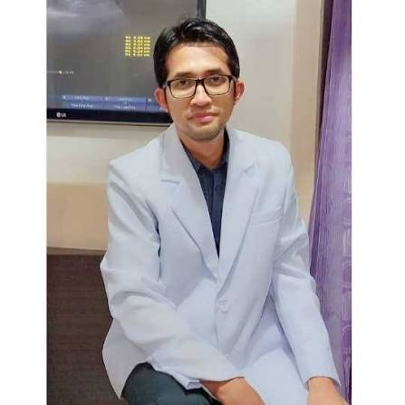

Mengapa 90 hari?
Segera dibukaSperma butuh ± 3 bulan
Pembentukan sampai matang memakan waktu sekitar 2,5–3 bulan. Perubahan gaya hidup suami hari ini terlihat pada sperma beberapa bulan kemudian.
Asam folat dimulai sebelum hamil
Tabung saraf janin terbentuk di minggu-minggu awal, sering sebelum ibu tahu dirinya hamil.
Cek dan vaksin perlu jeda
Hasil lab perlu ditindaklanjuti, dan setelah vaksin rubella kehamilan perlu ditunda sekitar 1 bulan.
Berbasis bukti ilmiah
Promil sudah terlalu banyak "katanya".
Program ini disusun dari jurnal, bukan dari mitos.
Setiap materi disusun dari pedoman klinis internasional dan nasional, serta penelitian terbaru: tinjauan sistematis, meta-analisis, uji klinis, dan studi kohort besar yang terbit 2019–2026. Bila buktinya masih terbatas atau bertentangan, kami sampaikan apa adanya.
Pedoman klinis
WHO, ACOG, ASRM, NICE, POGI, dan Kemenkes RI.
Jurnal 2019–2026
Diutamakan meta-analisis, uji klinis acak, dan kohort besar.
Rujukan dicantumkan
Setiap ringkasan PDF memuat daftar pustaka lengkap dengan PMID/DOI, bisa Anda cek sendiri.
Contoh pedoman yang menjadi rujukan
- WHO. Laboratory Manual for the Examination and Processing of Human Semen, edisi 6 (2021).
- ASRM Practice Committee. Optimizing natural fertility: a committee opinion. Fertil Steril (2022).
- ACOG Committee Opinion No. 762. Prepregnancy Counseling (2019).
- WHO. Guidelines on Physical Activity and Sedentary Behaviour (2020).
- NICE. Fertility problems: assessment and treatment (CG156).
- Kemenkes RI. Permenkes No. 21 Tahun 2021 tentang pelayanan kesehatan masa sebelum hamil, hamil, persalinan, dan sesudah melahirkan.
Untuk siapa
- Pasangan yang baru mulai atau akan mulai merencanakan kehamilan.
- Pasangan yang sudah mencoba beberapa bulan dan ingin persiapan yang lebih terarah.
- Suami yang ingin tahu perannya dalam program hamil.
Program ini bukan pengganti pemeriksaan dokter.
Bila sudah mencoba lebih dari 12 bulan (atau 6 bulan pada usia istri 35 tahun ke atas), usia istri 40 tahun ke atas, haid sangat tidak teratur, atau pernah keguguran berulang, sebaiknya periksa ke dokter dulu. Program tetap bisa diikuti bersamaan sebagai pendamping. Belum yakin? Isi Cek Kesiapan Hamil.
Isi program: 3 fase, 12 minggu
Minggu 1 bisa dimulai hari ini.
Tonton video pengantar berdua malam ini, dan Anda sudah memulai.
Yang Anda dapatkan
13 video kelas
Video pengantar dan 12 video mingguan dari dr. Bayu, bisa ditonton kapan saja dan diulang.
Bonus video khusus suami
Gaya hidup untuk kualitas sperma dan cara memahami hasil analisis sperma.
Checklist mingguan
12 minggu tugas kecil untuk istri dan suami, bisa dicentang dari ponsel.
Kalender siklus & masa subur
Catatan haid yang hanya tersimpan di perangkat Anda.
Panduan tertulis untuk suami
Peran suami tiap fase, dalam bentuk ringkas yang mudah dibaca.
Lembar persiapan konsultasi
Ringkasan riwayat dan daftar pertanyaan untuk dibawa saat periksa.
Ringkasan PDF tiap video
Bisa dibaca ulang atau dicetak, lengkap dengan sumber rujukan.
Daftar cek sebelum hamil
Pemeriksaan untuk istri dan suami, beserta alasannya.
Semua di atas, dalam satu program
Rp99.000
± Rp1.100 per hari, untuk berdua · sekali bayar
Berbasis pedoman klinis & jurnal 2019–2026
Mulai Program SekarangPembayaran aman lewat Mayar · Akses dikirim ke email · Format: kelas video + aplikasi web + PDF
Program bersifat edukasi umum, tidak menjamin kehamilan, dan tidak menggantikan konsultasi atau pemeriksaan langsung. Tidak memuat rekomendasi merek obat maupun suplemen. Sumber rujukan: pedoman POGI, WHO, ACOG, ASRM, NICE, dan Kemenkes, serta jurnal ilmiah 2019–2026.

Pengajar
dr. Bayu Maulana, Sp.O.G
Dokter spesialis obstetri dan ginekologi di Lampung. Materi disusun dari pedoman POGI, WHO, ACOG, ASRM, dan Kemenkes, dengan bahasa sehari-hari yang mudah dipahami pasangan.
Setelah positif hamil
Pendampingan tidak berhenti di hari ke-90. Bila Anda positif hamil, tersedia program lanjutan untuk menemani masa kehamilan hingga persalinan.
Pertanyaan umum
Dari mana sumber materinya?
Dari pedoman klinis (WHO, ACOG, ASRM, NICE, POGI, Kemenkes) dan penelitian terbaru yang terbit 2019–2026, terutama meta-analisis, uji klinis acak, dan studi kohort besar. Daftar rujukan lengkap dengan PMID/DOI dicantumkan di ringkasan PDF setiap video.
Apakah program ini menjamin hamil?
Tidak. Program ini edukasi dan pendampingan persiapan kehamilan. Kehamilan dipengaruhi banyak faktor, dan sebagian memerlukan pemeriksaan serta penanganan langsung oleh dokter.
Mengapa suami juga ikut?
Masalah kesuburan bisa berasal dari istri, suami, atau keduanya. Sperma juga membutuhkan sekitar tiga bulan untuk terbentuk, sehingga perbaikan gaya hidup suami sebaiknya dimulai bersamaan.
Apakah ada konsultasi pribadi?
Tidak. Pertanyaan tentang kondisi pribadi tidak dijawab di program. Untuk keluhan atau hasil pemeriksaan, silakan periksa langsung ke dokter atau bidan. Lihat Kontak & Jadwal Praktik.
Apakah program ini merekomendasikan merek suplemen?
Tidak. Program menjelaskan zat gizi yang dibutuhkan, seperti asam folat, tanpa menyebut merek obat maupun suplemen.
Di mana data siklus saya disimpan?
Catatan haid dan checklist disimpan hanya di perangkat Anda, tidak dikirim ke server. Lihat Kebijakan Privasi.
90 hari dari sekarang
Waktunya akan berlalu juga.
Lebih baik dilalui dengan bersiap, berdua.
Rp99.000 · sekali bayar · akses dikirim ke email
© dr. Bayu, Sp.O.G · bayumaulanaspog.com · Dibuat untuk edukasi & alat bantu klinis.